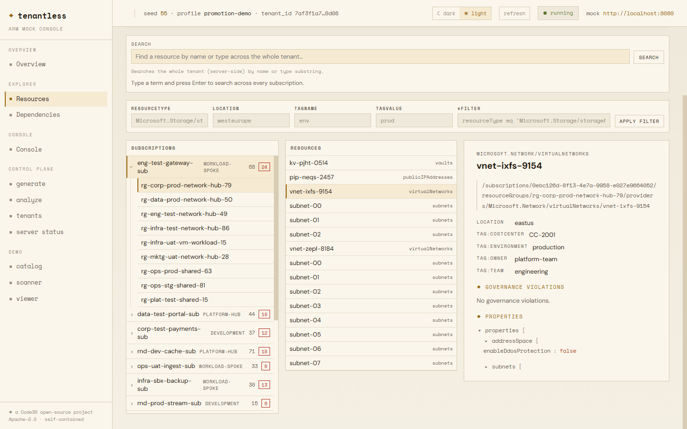

A disposable Azure tenant for testing the code that reads one
TenantLess generates statistically realistic Azure estates and serves them over ARM-compatible HTTP. Your unmodified scanner, policy engine or cost tool, or a whole class of trainees, walks 145,000 resources that were never provisioned. Read by default; ARM writes are opt-in.
Apache-2.0 · Rust + Python + PostgreSQL
$ docker compose --profile demo up generator-1 | Generated tenant 56d2557f…36e9: generator-1 | 50 subscriptions, 828 resource groups, generator-1 | 4960 resources, 1238 violations, … generator-1 | (seed=42, …, elapsed=2748ms) mock-server-1 | tenantless-server listening (HTTP) mock-server-1 | addr=0.0.0.0:8080 $ curl -H "Authorization: Bearer anything" \ "localhost:8080/subscriptions?api-version=2022-12-01" { "value": [ { "subscriptionId": "04379017-…-acf97defd49f", "displayName": "infra-sbx-portal-sub", "state": "Enabled", … }, …49 more subscriptions ] }Captured from the published v1.5.0 images, lightly trimmed. Same seed, same estate, every run.

The axis isn't company size. It's who owns the estate your code reads.
If the infrastructure your software inspects belongs to someone else, you can't reproduce it, can't borrow it to debug, and can't show it in a demo. That's the problem TenantLess exists for.
You read someone else's estate
Scanner vendor, CSPM, FinOps SaaS, governance product, consultancy with its own audit tooling. N clients, N estates, and you can reproduce none of them. You can't ask a client to lend you production to debug.
A tenant you can specify isn't a convenience here. It's the only way to reproduce a bug a customer reported.
You read your own estate
Platform team, internal FinOps, in-house governance tooling. Your dev subscription already looks like your production, and it's free to look at.
Two exceptions: rehearsing a tooling change before it touches production, and a synthetic twin of your own estate for training new joiners.
This includes three-person companies. A studio launching an Azure cost tool has this problem on day one, and harder than a large vendor that can afford sandbox tenants. The vocabulary is enterprise; the need isn't.
| Profile | Verdict | Why |
|---|---|---|
| Scanner / CSPM / FinOps SaaS vendor on Azure | yes, day one | Reproducing a customer's bug is impossible any other way. Company size is irrelevant. |
| Consultancy with Azure audit tooling | yes | Same reason, plus sales demos: show 18 violation types without exposing a real client. |
| Multinational onboarding cloud, FinOps or SRE joiners | yes | A twin generated from your own tenant's statistics: joiners practise on it before they get production access. |
| Training or certification provider | yes | The same scenario for 5 learners or 5,000, reset between sessions, with no tenant per seat. |
| Large enterprise: cost and drift simulation on its own estate | yes | Rehearse FinOps scenarios and drift-detection runbooks on a production-shaped twin, without waiting for the real estate to misbehave. |
| University or bootcamp teaching cloud | yes | A realistic 50K-resource estate as course material, at zero Azure cost. Fixed seeds make labs gradable. |
| Platform team, 50+ subscriptions, internal tooling | maybe | Useful for CI and for rehearsing tooling changes before production. Not indispensable. |
| Platform team, a handful of subscriptions | no | Your dev subscription does the job, for free and more faithfully. |
| AWS-only team | no | No Azure. For API-call testing, your equivalent is moto. |
Not another cloud emulator
moto and LocalStack (AWS, and now Azure in preview) emulate cloud services so you can build and deploy against them. TenantLess answers a different question.
| moto / LocalStack | TenantLess | |
|---|---|---|
| What you get | An empty room. You furnish it yourself through API calls. | A furnished building, at the scale you specify. |
| The question tested | "Does my deployment work?" | "Does my scanner survive 145K resources it didn't create?" |
| Cost of entry | You write the setup for every test. | You describe the estate once, as a statistical profile. |
| What becomes possible | Testing your write and deploy path. | Testing your read path at a scale, and with pathologies, you can't hand-build. |
Several of our own 1.1.x fixes only surfaced at scale
Cost-query exhaustion (1.1.3), generator memory (1.1.4), slow resource-group lookups (1.1.10), unbounded role-assignment listings (1.1.11): invisible at 100 resources, real at 50,000. Drag the slider to see what tends to break first.
Rule of thumb: under about 1,000 resources, hand-written fixtures are faster. Between 1K and 10K, pagination and cross-references start to matter. Past 50K, you're testing things you can't build any other way.
Seven planes of a real estate, none of it running
Nothing generated is provisioned. Everything generated is shaped like production, down to pagination and error responses.
List, detail and $filter with pagination and arbitrarily nested resource types; ARM-shaped errors. Opt-in PUT / PATCH / DELETE with ETags.
The Cost Management query API over generated cost data, pinned to a date you choose so results repeat.
Entra-style token issuance, 8 built-in roles, role assignments, and over-privilege you can inject.
Repeatable configuration drift that a re-scan detects, and a one-step undo that reverses it.
Hub-and-spoke peering, shared Key Vaults, central logging, private endpoints across subscriptions.
18 violation types across severities, injected at rates you control, with an answer key for grading.
A browser UI to generate, snapshot, restore and explore estates, plus a guided scanner demo.
Every trainee, the same realistic estate
Teaching FinOps, SRE, DevOps and cloud governance means practising on infrastructure. Production is off limits, sandboxes are small and expensive, and no two people can safely share one. TenantLess gives every learner the same production-shaped Azure estate, with no Azure bill, no real data and no blast radius.
A real estate to teach on
Student credits buy a handful of resources, not 300 subscriptions with hub-and-spoke networking, cost history and misconfigurations to find. A fixed seed gives every student the identical estate, so labs are gradable and cohorts comparable, year after year.
A lab range that never runs out
Cloud academies, certification programmes and the platform vendors' own learning teams can run the same scenario for 5 learners or 5,000, without provisioning a tenant per seat or cleaning up after each class. Reset between sessions and the estate is exactly as it was.
Practise on a twin before touching production
New cloud, FinOps and SRE hires learn your landing-zone shapes, naming and policies on a synthetic twin generated from your own tenant's statistics. Only distributions leave the real estate, enforced by automated privacy checks, so joiners can break things freely before they get production access.
Cost allocation, anomaly hunting and chargeback against the Cost Management API, pinned to a date so every run matches.
Detect and remediate misconfigurations, then practise drift detection and one-step undo on an estate that resets.
18 violation types across severities, injected at rates you choose: a graded range for audit and policy training.
From nothing to a scannable tenant in about 12 seconds
One command, Docker only. No host Python, Node or Rust.
- 1Compose starts PostgreSQL and seeds a fixed demo estate: about 50 subscriptions and 5,000 resources across every plane.
- 2The ARM mock server starts on
localhost:8080. Point any ARM client at it. - 3Open
localhost:8080/uifor the web console. Source builds and bring-your-own PostgreSQL are in the README.
# one-command quickstart $ cp .env.example .env $ docker compose --profile demo up # scan it like a real ARM tenant $ curl -H "Authorization: Bearer anything" \ "http://localhost:8080/subscriptions?api-version=2022-12-01" # web console: http://localhost:8080/uiCommands from the README. About 12 s to the first ARM 200, measured on a pre-built image.
From read-only to stateful, one additive step at a time
Every step is opt-in and off by default: with writes disabled, responses stay byte-identical to the release before.
Overlay substrate
Copy-on-write overlay, tombstones and revisions over the immutable generated baseline.
Stateful overlay goes live
One resolver behind every ARM read, and ETags on detail responses.
Opt-in ARM writes
PUT / PATCH / DELETE on any resource id, conditional writes, and an atomic nested-delete cascade.
Next: resource-group create and delete, then a terraform plan → apply → refresh → destroy workflow that converges against the mock. All releases →